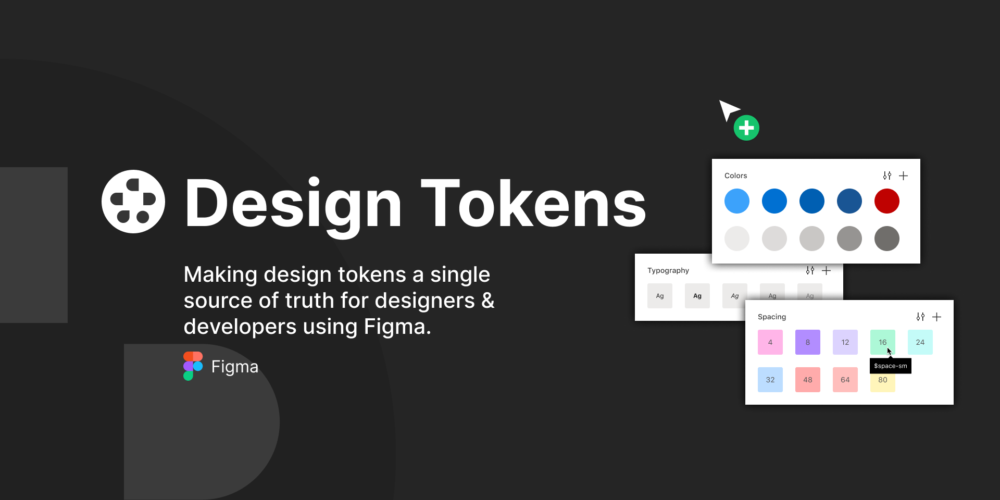
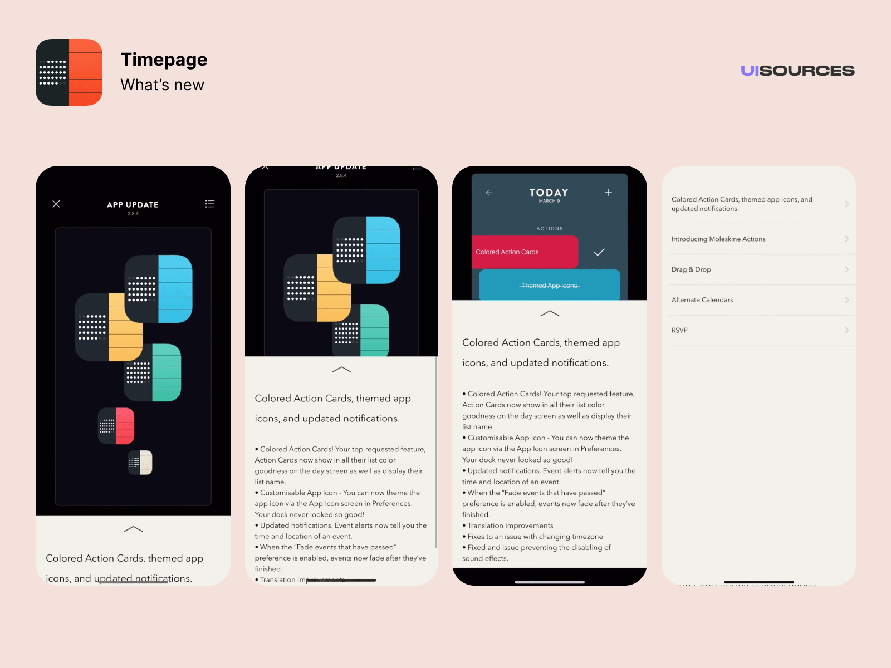
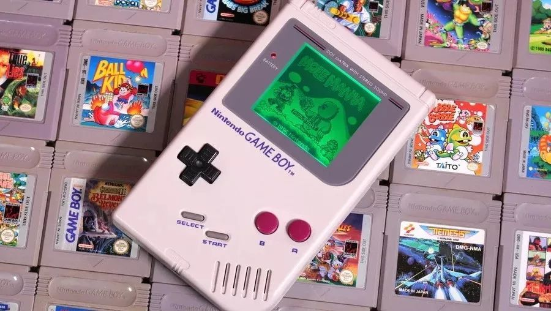
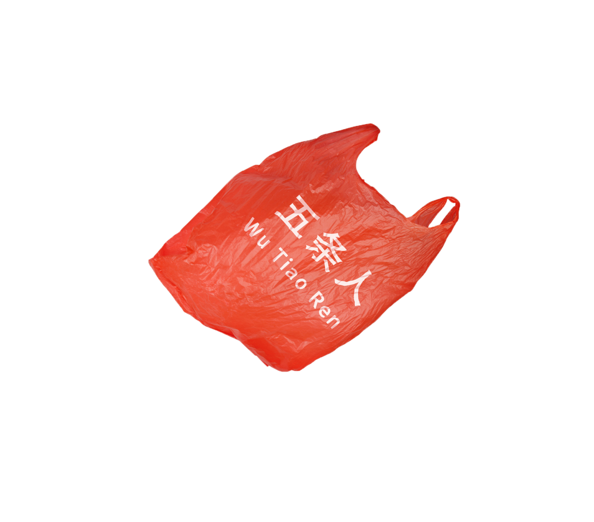
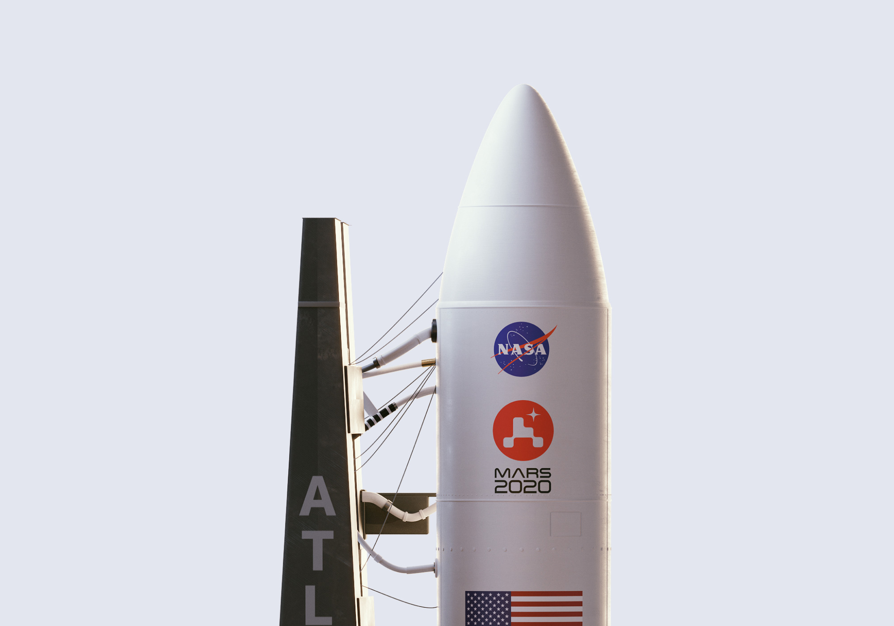

设计周刊 Design Weekly #19
Thu, Aug 6, 2020
🏷 设计资源
Design Tokens
https://www.figma.com/community/plugin/843461159747178978/Figma-Tokens
这个插件可以在你的figma文件中创建Token。它将有助于保持所有token和元素属性的同步。

🏷 设计灵感
UISources
UI Sources是最大的移动设计模式、截图和微交互的资源库之一。 为设计师、产品经理所构建的，可用于缩短迭代周期、获得灵感、识别趋势与竞争对手进行比较。

🏷 设计文章
任天堂的设计哲学
小时候的快乐，是对世界的未知与好奇
长大后的快乐，是对世界的发泄与征服

🏷 设计人
给五条人做了八年设计的海峰靓仔
https://www.shejipi.com/429337.html
给五条人做了八年设计的平面设计师，HuDesign胡子设计工作室掌柜，海丰靓仔胡镇超（胡子）。你唱什么，我做什么。那些诗性和市侩所孵化出来的浪漫，变得有迹可循。
“它是一个去设计化的logo，没有字体设计，还是一个位图，没有矢量。”
安利一波只有两条人的五条人：靓仔们从哪里来，就随手携带哪里的江湖。有的英雄一路怀揣宝剑 ，打怪升级，而五条人，一直怀揣着他们的阿珍阿强，丽莎发廊，还有那双略显潦草的人字拖告诉你：靓仔来了。

🏷 随便看看
R’over the Moon 月亮之上
House of van Schneider 为 Mars2020 设计的新标志。
